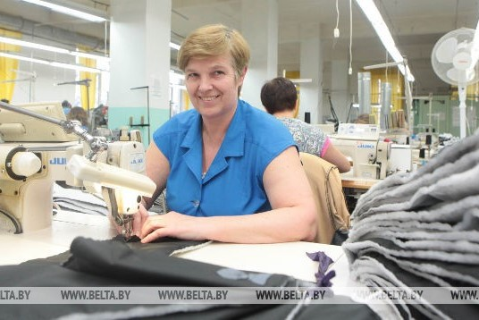
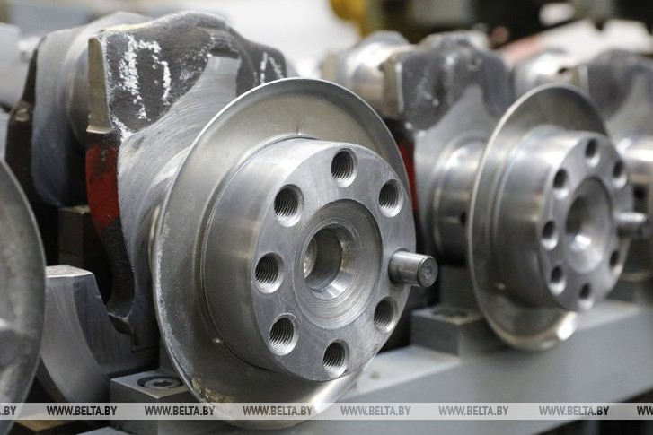

Добро пожаловать в Брестскую область!
Географическая информация
Область расположена на юго-западе страны, на юге граничит с Украиной, на
западе - с Польшей. На территории Брестчины находится крайняя западная
точка страны - на реке Буг к юго-западу от города Высокое. Ее координаты
- 52°17' северной широты и 23°11' восточной долготы. Площадь области -
32,8 кв.км. Рельеф равнинный. Брест – областной административный центр.
В состав области входят 16 районов, 20 городов (из них три областного
подчинения – Брест, Барановичи, Пинск), 9 поселков городского типа, 2178
сельских населенных пунктов.


Промышленность
Здесь расположены предприятия по выпуску продуктов питания, развиты
машиностроение, текстильное и швейное производство, производство мебели
и строительных материалов. Промышленность региона обеспечивает 26,6%
валового регионального продукта. Удельный вес области в объеме
промышленного производства страны - 10,9%. В регионе насчитывается более
1800 промышленных предприятий. Ведущими являются ОАО "Савушкин продукт",
ОАО "558 авиационный ремонтный завод", СП "Санта-Бремор" ООО, ОАО
"Брестский мясокомбинат", РУП "Брестэнерго", ОАО "Барановичское
производственное хлопчатобумажное объединение", ОАО "Полесье", СП ОАО
"Брестгазоаппарат", РУПП "Гранит", ОАО "Белсолод", ЗАО "Холдинговая
компания "Пинскдрев", ОАО "Брестский ликеро-водочный завод "Белалко",
ПТУП "Гефест-техника".


Как появилась Брестская область?
На протяжении столетий Брест не раз становился частью разных государств,
разрушался и восстанавливался вновь. Город по сей день хранит
архитектуру разных эпох: от древнего городища Берестья до зданий
имперского Брест-Литовска, польского Бреста-над-Бугом и советского
Бреста. В самом начале своей истории Брест был объектом постоянных
конфликтов между Польским княжеством и Киевской Русью, позже -
Галицко-Волынским княжеством и Великим княжеством Литовским. Удобное
географическое расположение поселений на берегах судоходных рек
превратило эти места в международный перекресток. Через Брестчину
проходили важные торговые пути, которые связывали Западную Европу с
Ближним Востоком и Причерноморьем. В XIV веке она стала частью Великого
княжества Литовского, а потом и Речи Посполитой. Знаковым событием в
истории Брестчины стало строительство Брестской крепости, которое
развернулось в 1830-х годах. Она должна была стать одним из самых
больших и современных фортификационных сооружений в мире. 22 июня 1941
года, в первый день Великой Отечественной войны, Брестская область и
город Брест со своей крепостью приняли первый удар немецких войск.
Брестская крепость, с находившимся в ней небольшим гарнизоном, не
сдавалась до 30 июля 1941 года. В 1991 году именно в Брестской области,
в резиденции "Вискули" на территории Беловежской пущи, был подписан
исторический документ о распаде Советского Союза. Здесь же зародилась
новая международная организация - Содружество Независимых Государств
(СНГ).

Интерестные факты
В конце 19 века железнодорожный вокзал Бреста считался лучшим в империи.
Брест почти с момента своего основания был таможенным городом, взымавшим
пошлину за провозимые вглубь империи товары. В 12 веке там построили
деревянную крепость для защиты караванов от разбойников.
Брест стал одним из первых городов, на чьих улицах появились фонари с
электрическими лампочками.
Построенный в Бресте висячий мост самый длинный в Беларуси.
Исторические достопримечательности и туристические объекты Могилёвской
Области
Каменецкая башня